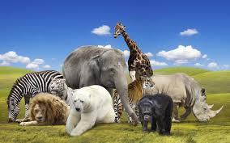

Hello My Name is Kaleo and I am 8 year's old
I have a very special love of animals and hope to be a veterinarian one day.
Below you will see animals I like and hope to take care of at my practice. I currently have 4 dogs, a cat, a fish, and my guinea pig Tootsie Roll Lebron Cuddles.
My best animal experience thus far, was going to the Villalobos Pit Bull Rescue as seen on Pit Bulls and Parolees in New Orleans for my 7th Birthday.
Kaleo's Menagerie of Animals


When my mom finishes school what should my prize be?
Mini Pig Disney Cruise